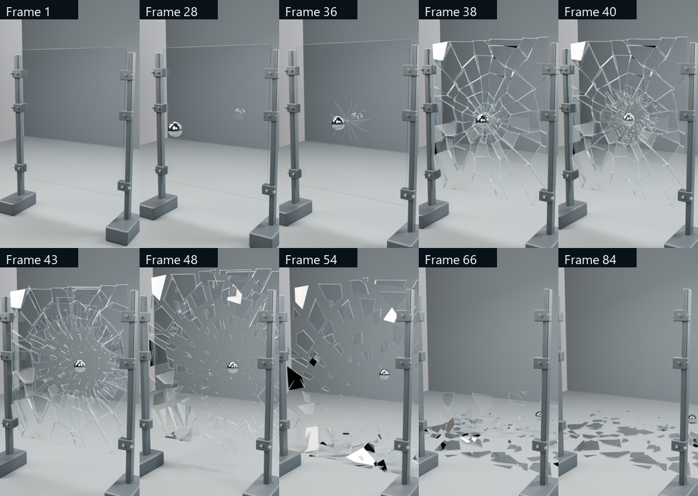

V7 · 유리판 파손 품질 시험
이번 버전은 **미리 정한 이동 경로로 파편을 흩뿌리는 방식** 대신, 파편을 실제로 분리한 후 Blender 강체 물리에 맡기는 장면입니다. 유리의 굴절, 파편 가장자리, 촬영 조명을 새로 제작했습니다. 실측 파괴 실험이나 최종 20장 영상은 아닙니다.
비교 영상을 준비하고 있습니다.
V6 · 기존 파손 연출
새총 당김과 발사 포함 · 3.5초
V7 · 새로운 강체 파손 시험
유리판 한 장 고품질 촬영 · 3.5초
V7 장면별 확인

V7의 목표는 유리 파손 자체의 품질 검증입니다. 유리판 20장 연속 관통과 새총 당김 전체 구간은 이 시안에서 제작하지 않았습니다.